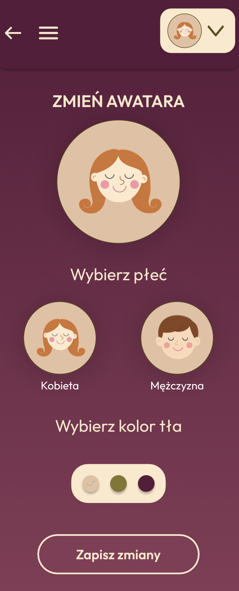
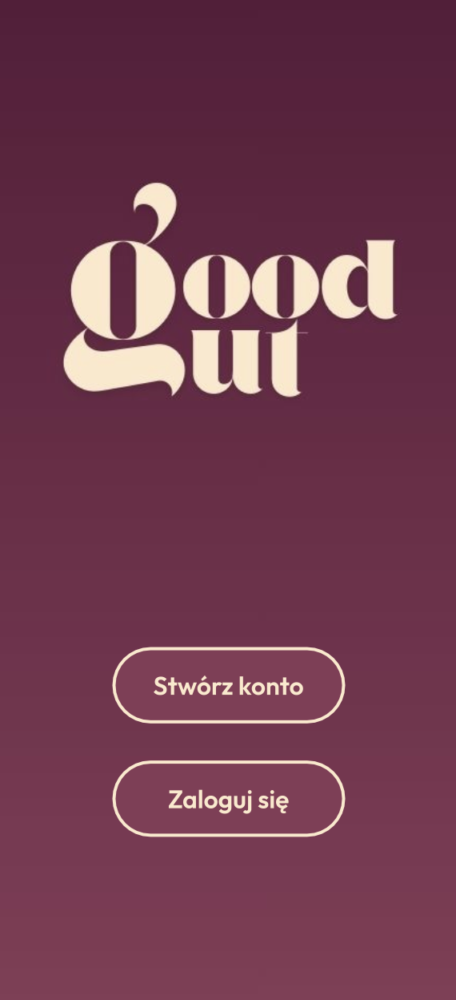
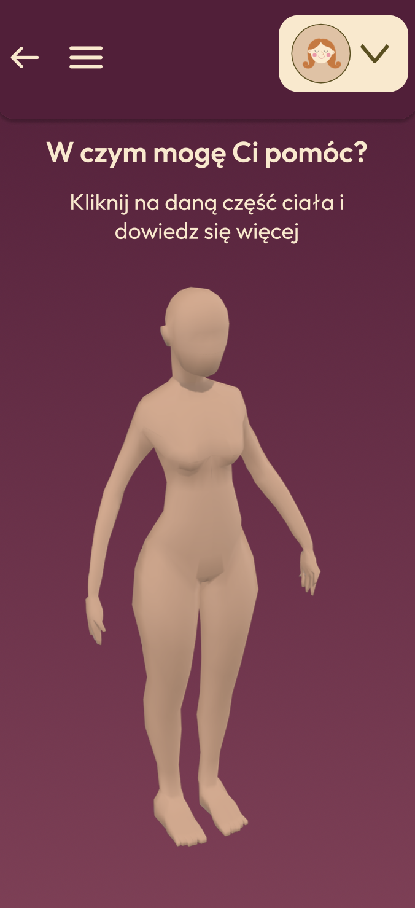
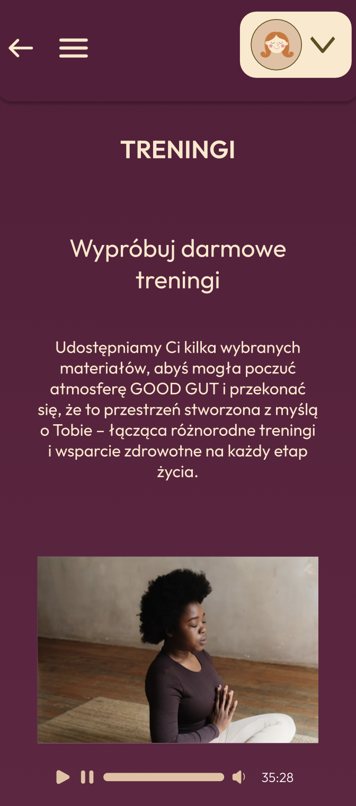
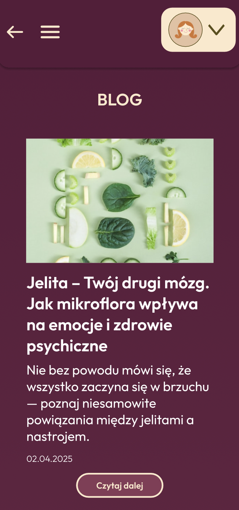
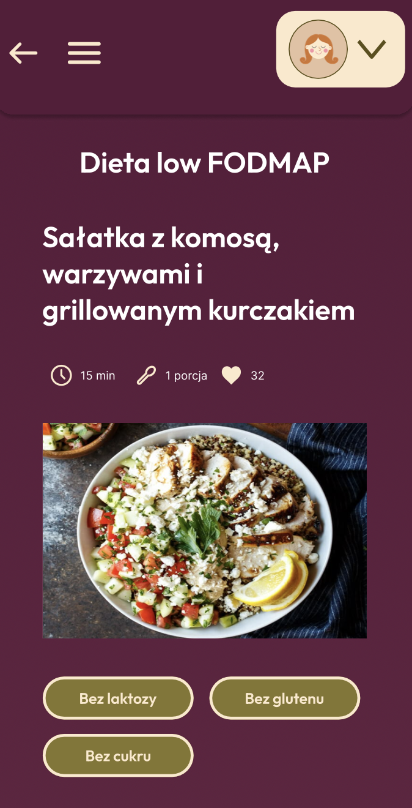
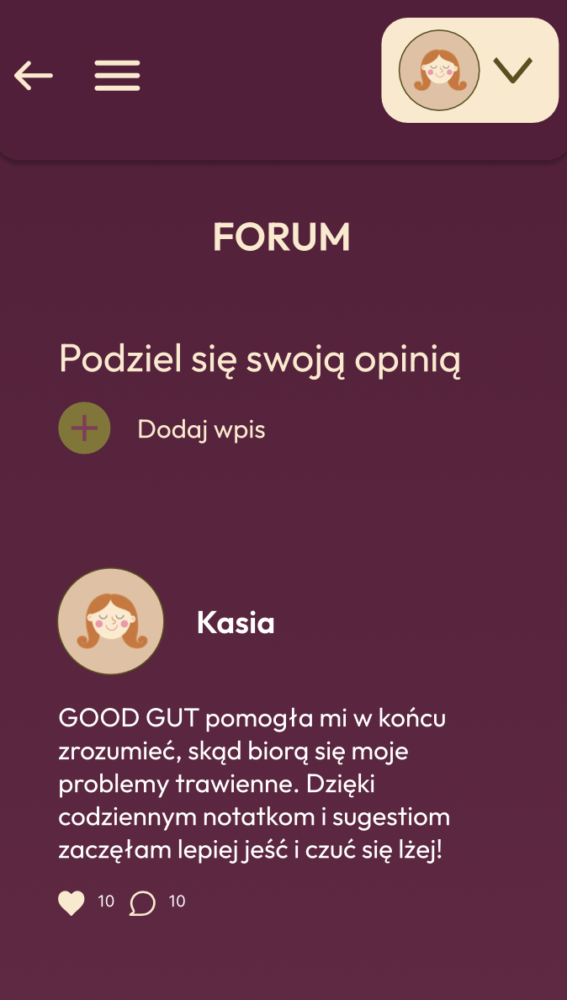
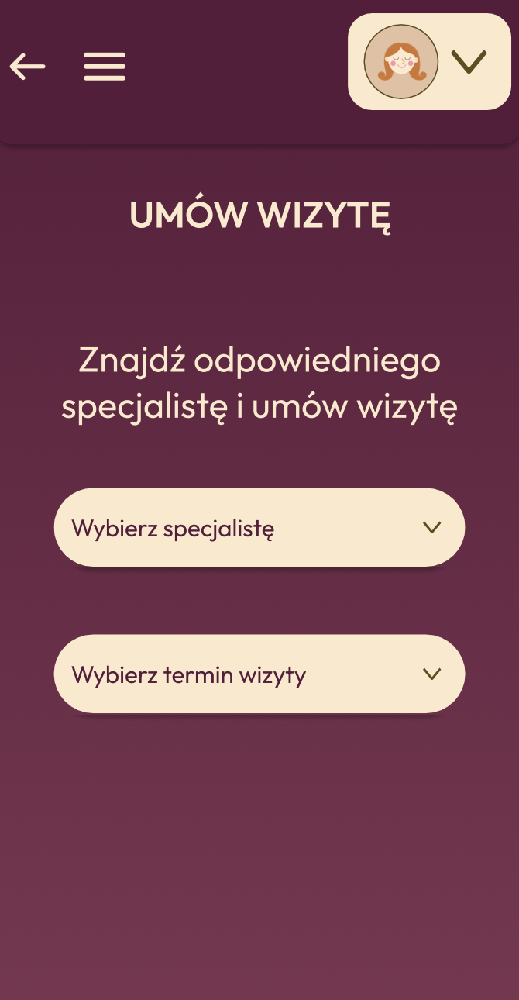

GOODGUT
— aplikacja mobilna wspierająca świadome i zdrowe nawyki
— aplikacja mobilna wspierająca świadome i zdrowe nawyki
Celem aplikacji GoodGut jest promowanie świadomej troski o zdrowie fizyczne i psychiczne. Zawarte funkcjonalności pozwalają na ułatwienie rozpoznawania sygnałów, które wysyła organizm (np. zmęczenie, bezsenność, problemy trawienne). Aplikacja promuje zintegrowane podejście do zdrowia – łączenie diety, aktywności fizycznej i dobrostanu psychicznego. GoodGut wyróżnia dostęp do wiedzy ekspertów i możliwość umawiania się na konsultacje ze specjalistami bezpośrednio przez aplikację.








Coraz więcej osób zmaga się z chorobami cywilizacyjnymi, takimi jak przewlekły stres, bezsenność czy zaburzenia trawienia, ale często nie wiedzą, jak skutecznie z nimi walczyć. Brakuje prostych, rzetelnych i spójnych źródeł wiedzy – dostępne informacje są rozproszone i często sprzeczne.
Niestety brakuje punktu wyjścia – wiele osób nie wie, jak rozpocząć proces dbania o zdrowie w sposób dopasowany do ich potrzeb. Dodatkowy problem stanowią rozproszone rozwiązania na rynku – dostępne aplikacje oferują fragmentaryczne wsparcie (np. tylko dieta, tylko trening, tylko artykuły), przez co użytkownik nie otrzymuje spójnej, holistycznej pomocy.
Paleta kolorów
Typografia
Tworząc projekt aplikacji GOODGUT kluczową rolę odegrały badania użytkownika. To pokazało mi, że projektowanie w zgodzie z potzrebami odbiorcy ma ogromny wpływ na użyteczność i dostępność aplikacji, a także sprzyja budowaniu zaufania i głosu marki .